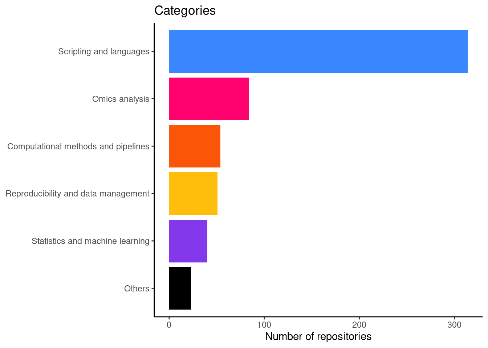
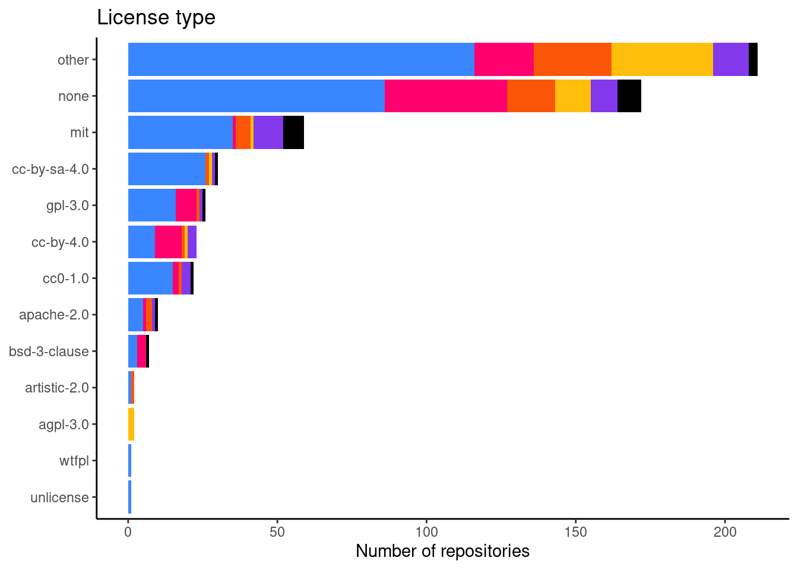
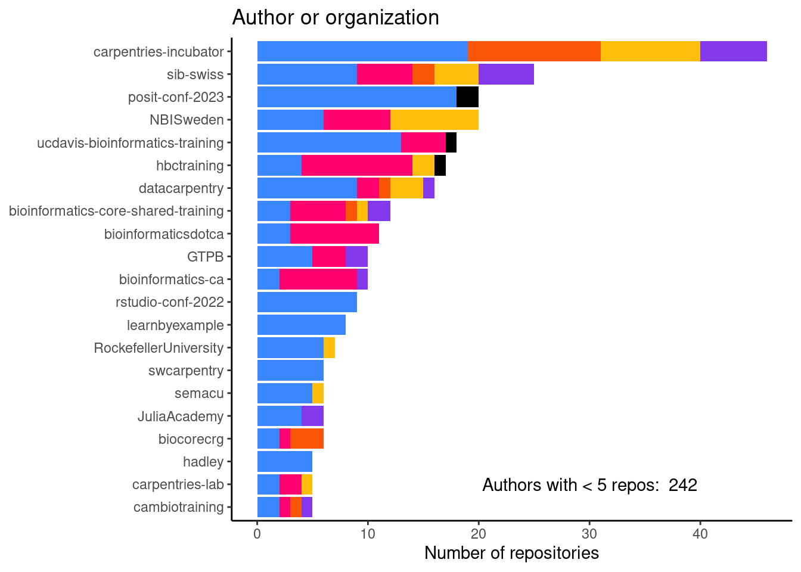
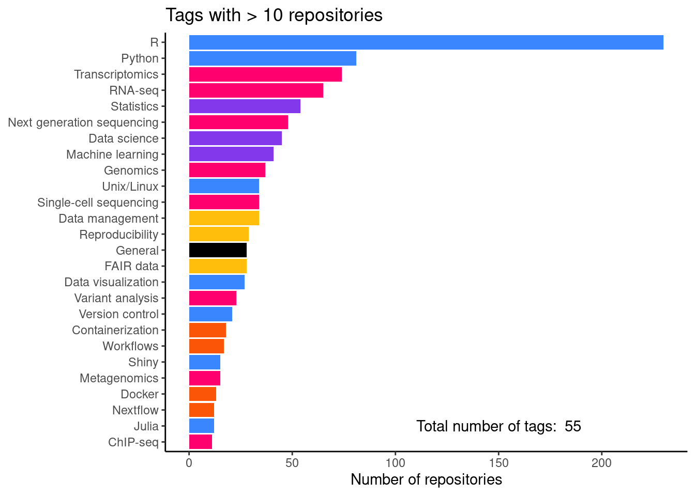
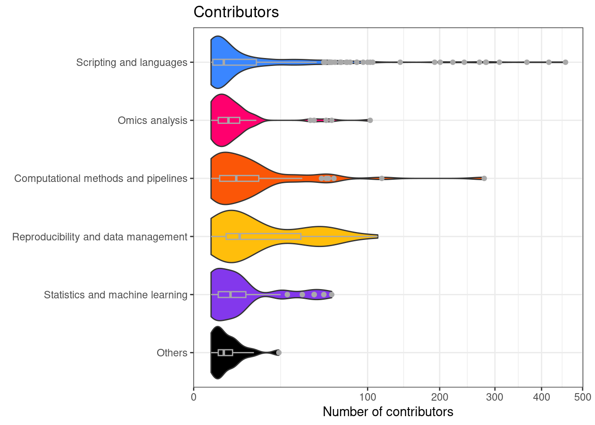
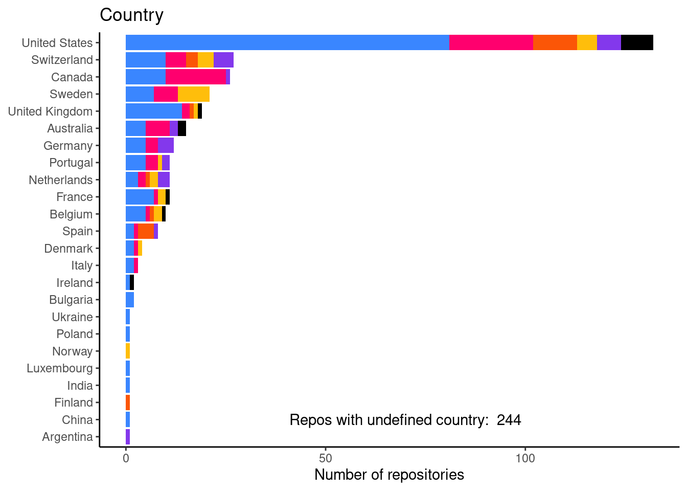

Code
library(httr2)
library(ggplot2)
library(dplyr)
library(ggbreak)
library(cowplot)Create a file named .env.sh and add your GitHub PAT (variable named PAT ) and google api key (named GOOGLE_API_KEY) in there, e.g.:
Now source this file to get the keys as objects:
Get environment variables as R objects:
These are the same colors as on glittr.org
# get all repositories content as nested list
parsed <- request("https://glittr.org/api/repositories") |>
req_perform() |> resp_body_json()
# extract relevant items as dataframe
repo_info_list <- lapply(parsed$data, function(x) data.frame(
repo = x$name,
author_name = x$author$name,
stargazers = x$stargazers,
recency = x$days_since_last_push,
url = x$url,
license = ifelse(is.null(x$license), "none", x$license),
main_tag = x$tags[[1]]$name,
main_category = x$tags[[1]]$category
))
repo_info <- do.call(rbind, repo_info_list)
# create a column with provider (either github or gitlab)
repo_info$provider <- ifelse(grepl("github", repo_info$url), "github", "gitlab")
# create a factor for categories for sorting
repo_info$main_category <- factor(repo_info$main_category,
levels = names(glittr_cols))
# category table to keep order the same in the plots
cat_table <- table(category = repo_info$main_category)
cat_table <- sort(cat_table)Number of repositories: 568
# take long time to run, so try to use cache results if no repos have been
# added in the meantime
# check if data/n_contributors.rds exists
if(file.exists("data/n_contributors.rds")) {
n_contributors <- readRDS("data/n_contributors.rds")
} else {
n_contributors <- NULL
}
# get contributors info only from github repos
repo_info_gh <- repo_info[repo_info$provider == "github", ]
# get contributor info from github api if update is needed
if(!identical(sort(repo_info_gh$repo), sort(names(n_contributors)))) {
dir.create("data", showWarnings = FALSE)
n_contributors <- sapply(repo_info_gh$repo, function(x) {
# get repo contributors
resp <- request("https://api.github.com/repos/") |>
req_url_path_append(x) |>
req_url_path_append("contributors") |>
req_url_query(per_page = 1) |>
req_headers(
Accept = "application/vnd.github+json",
Authorization = paste("Bearer", pat),
`X-GitHub-Api-Version` = "2022-11-28",
) |>
req_perform()
link_url <- resp_link_url(resp, "last")
if(is.null(link_url)) {
return(1)
} else {
npages <- strsplit(link_url, "&page=")[[1]][2] |> as.numeric()
return(npages)
}
})
# overwrite rds file
saveRDS(n_contributors, "data/n_contributors.rds")
}
repo_info_gh$contributors <- n_contributors[repo_info_gh$repo]parsed <- request("https://glittr.org/api/tags") |>
req_perform() |> resp_body_json()
tag_dfs <- list()
for(i in seq_along(parsed)) {
category <- parsed[[i]]$category
name <- sapply(parsed[[i]]$tags, function(x) x$name)
repositories <- sapply(parsed[[i]]$tags, function(x) x$repositories)
tag_dfs[[category]] <- data.frame(name, category, repositories)
}
tag_df <- do.call(rbind, tag_dfs) |> arrange(repositories)Number of tags/topics: 55
cat_count_plot <- table(category = repo_info$main_category) |>
as.data.frame() |>
ggplot(aes(x = reorder(category, Freq), y = Freq, fill = category)) +
geom_bar(stat = "identity") +
scale_fill_manual(values = glittr_cols) +
coord_flip() +
theme_classic() +
ggtitle("Categories") +
theme(legend.position = "none",
axis.title.y = element_blank()) +
ylab("Number of repositories")
print(cat_count_plot)
lic_freq_data <- table(license = repo_info$license,
main_category = repo_info$main_category) |>
as.data.frame()
lic_freq_data$main_category <- factor(lic_freq_data$main_category,
levels = names(cat_table))
lic_freq_plot <- lic_freq_data |>
ggplot(aes(x = reorder(license, Freq), y = Freq, fill = main_category)) +
geom_bar(stat = "identity") +
coord_flip() +
scale_fill_manual(values = glittr_cols) +
theme_classic() +
ggtitle("License type") +
ylab("Number of repositories") +
theme(legend.position = "none",
axis.title.y = element_blank())
print(lic_freq_plot)
| Var1 | Freq | perc |
|---|---|---|
| other | 211 | 37.3 |
| none | 172 | 30.4 |
| mit | 59 | 10.4 |
| cc-by-sa-4.0 | 30 | 5.3 |
| gpl-3.0 | 26 | 4.6 |
| cc-by-4.0 | 23 | 4.1 |
| cc0-1.0 | 22 | 3.9 |
| apache-2.0 | 10 | 1.8 |
| bsd-3-clause | 7 | 1.2 |
| agpl-3.0 | 2 | 0.4 |
| artistic-2.0 | 2 | 0.4 |
| unlicense | 1 | 0.2 |
| wtfpl | 1 | 0.2 |
author_freq <- table(author_name = repo_info$author_name,
main_category = repo_info$main_category) |>
as.data.frame()
author_freq$main_category <- factor(author_freq$main_category,
levels = names(cat_table))
repos_per_author <- table(repo_info$author_name)
lf_authors <- names(repos_per_author)[repos_per_author < 5]
author_freq_plot <- author_freq |>
filter(!author_name %in% lf_authors) |>
arrange(Freq) |>
ggplot(aes(x = reorder(author_name, Freq), y = Freq, fill = main_category)) +
geom_bar(stat = "identity") +
coord_flip() +
ggtitle("Author or organization") +
ylab("Number of repositories") +
scale_fill_manual(values = glittr_cols) +
annotate(geom = "text", x = 2, y = 30,
label = paste("Authors with < 5 repos: ",
length(lf_authors)),
color="black") +
theme_classic() +
theme(legend.position = "none",
axis.title.y = element_blank())
print(author_freq_plot)
tag_freq_plot <- tag_df |>
filter(repositories > 10) |>
ggplot(aes(x = reorder(name, repositories),
y = repositories, fill = category)) +
geom_bar(stat = "identity") +
coord_flip() +
scale_fill_manual(values = glittr_cols) +
ggtitle("Tags with > 10 repositories") +
ylab("Number of repositories") +
annotate(geom = "text", x = 2, y = 150,
label = paste("Total number of tags: ",
nrow(tag_df)),
color="black") +
theme_classic() +
theme(legend.position = "none",
axis.title.y = element_blank())
print(tag_freq_plot)
| name | category | repositories |
|---|---|---|
| R | Scripting and languages | 230 |
| Python | Scripting and languages | 81 |
| Transcriptomics | Omics analysis | 74 |
| RNA-seq | Omics analysis | 65 |
| Statistics | Statistics and machine learning | 54 |
| Next generation sequencing | Omics analysis | 48 |
| Data science | Statistics and machine learning | 45 |
| Machine learning | Statistics and machine learning | 41 |
| Genomics | Omics analysis | 37 |
| Unix/Linux | Scripting and languages | 34 |
| Single-cell sequencing | Omics analysis | 34 |
| Data management | Reproducibility and data management | 34 |
| Reproducibility | Reproducibility and data management | 29 |
| FAIR data | Reproducibility and data management | 28 |
| General | Others | 28 |
| Data visualization | Scripting and languages | 27 |
| Variant analysis | Omics analysis | 23 |
| Version control | Scripting and languages | 21 |
| Containerization | Computational methods and pipelines | 18 |
| Workflows | Computational methods and pipelines | 17 |
| Shiny | Scripting and languages | 15 |
| Metagenomics | Omics analysis | 15 |
| Docker | Computational methods and pipelines | 13 |
| Julia | Scripting and languages | 12 |
| Nextflow | Computational methods and pipelines | 12 |
| ChIP-seq | Omics analysis | 11 |
repo_info_gh$main_category <- factor(repo_info_gh$main_category,
levels = names(cat_table))
contributors_plot <- repo_info_gh |>
ggplot(aes(x = main_category, y = contributors, fill = main_category)) +
geom_violin(scale = "width") +
geom_boxplot(width = 0.1, col = "darkgrey") +
coord_flip() +
ggtitle("Contributors") +
ylab("Number of contributors") +
scale_y_sqrt() +
scale_fill_manual(values = glittr_cols) +
theme_bw() +
theme(legend.position = "none",
axis.title.y = element_blank(),
plot.margin = margin(t = 5, r = 10, b = 5, l = 10))
print(contributors_plot)
country_freq <- table(country = repo_info$country,
main_category = repo_info$main_category) |>
as.data.frame()
country_freq$main_category <- factor(country_freq$main_category,
levels = names(cat_table))
country_freq_plot <- country_freq |>
filter(country != "undefined") |>
ggplot(aes(x = reorder(country, Freq), y = Freq, fill = main_category)) +
geom_bar(stat = "identity") +
coord_flip() +
ggtitle("Country") +
ylab("Number of repositories") +
scale_fill_manual(values = glittr_cols) +
annotate(geom = "text", x = 2, y = 70,
label = paste("Repos with undefined country: ",
sum(repo_info$country == "undefined")),
color="black") +
theme_classic() +
theme(legend.position = "none",
axis.title.y = element_blank())
print(country_freq_plot)
| Var1 | Freq |
|---|---|
| undefined | 244 |
| United States | 132 |
| Switzerland | 27 |
| Canada | 26 |
| Sweden | 21 |
| United Kingdom | 19 |
| Australia | 15 |
| Germany | 12 |
| France | 11 |
| Netherlands | 11 |
| Portugal | 11 |
| Belgium | 10 |
| Spain | 8 |
| Denmark | 4 |
| Italy | 3 |
| Bulgaria | 2 |
| Ireland | 2 |
| Argentina | 1 |
| China | 1 |
| Finland | 1 |
| India | 1 |
| Luxembourg | 1 |
| Norway | 1 |
| Poland | 1 |
| Ukraine | 1 |